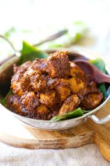
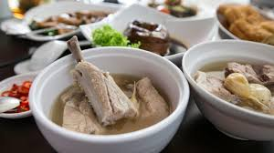
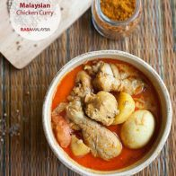

| Cuisine |
Food Image |
Ingredient |
Malay |

Chicken Rendang |
- 1 1/2 lbs. boneless and skinless chicken breasts or thighs, cut into cubes
- 1/3 cup cooking oil
- 1 cinnamon stick
- 3 cloves
- 3 star anise
- 3 cardamom pods
- 1 lemongrass, white part only, pounded and cut into strips
- 1 cup coconut milk
- 1 cup water
- 5 kaffir lime leaves (bruised)
- 5 tablespoons toasted grated coconut, kerisik
- 1 tablespoon sugar or to taste
- salt to taste
|
Chinese |

Bak Kut Teh |
- 10 cups water (2.5 liters)
- 1 packet Bak Kut Teh herbs (rinsed and drained)
- 3 slices Angelica Sinensis / Dong Gui (rinsed and drained)
- 12 Chinese mushrooms / shitake mushrooms (soaked, rinsed, and stalks removed)
- 2 tbsp vegetable oil
- 1 bulb garlic (separated but not peeled)
- 2 lbs baby back ribs or pork ribs, cut into bite-size pieces (900g)
- 2 tbsp dark soy sauce
- 1 piece rock sugar (10g)
- Salt to taste
- 12 small tofu puffs (cut into halves)
- 24 pieces tofu skin knots
- 1/4 cup goji berries
|
Indian |

Bak Kut Teh |
- 2 tablespoons oil
- 1/2 onion, diced
- 1 oz curry powder for meat
- 1 1/2 lbs chicken, chopped into pieces
- 3 cups water
- 1 big tomato, cut into wedges, optional
- 2 small potatoes, peeled and cut into wedges
- 4 hard-boiled eggs, (optional)
- 1/2 cup coconut milk or 3/4 cup milk
- salt to taste
|